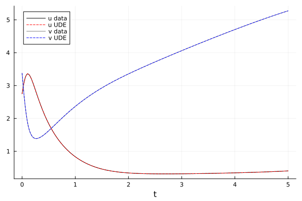
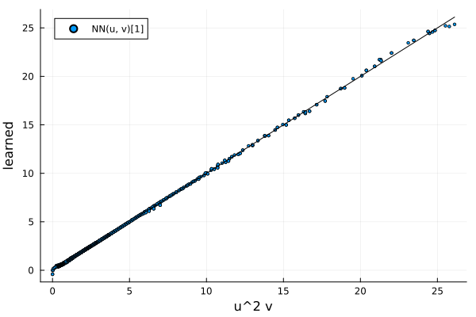

Learning the Brusselator reaction with a neural network
The first neural network tutorial learned a term of one field. Here the network takes two fields as input and returns two outputs: NN([u, v], θ) replaces the nonlinear reaction of the Brusselator in both equations. The interior of each equation is still a single array equation, and with ModelingToolkitNeuralNets loaded the network is evaluated in one call over the whole grid.
Data from the Brusselator
The one-dimensional Brusselator with periodic boundaries (the two-dimensional version is the getting-started example):
\[\begin{align} \frac{\partial u}{\partial t} &= 1 + u^2 v - 4.4u + \alpha \frac{\partial^2 u}{\partial x^2} \\ \frac{\partial v}{\partial t} &= 3.4u - u^2 v + \alpha \frac{\partial^2 v}{\partial x^2} \end{align}\]
We pretend the reaction u^2 v is unknown and keep the simulated data.
using ModelingToolkit, MethodOfLines, OrdinaryDiffEq, DomainSets
@parameters t x
@variables u(..) v(..)
Dt = Differential(t)
Dxx = Differential(x)^2
α = 0.1
dx = 0.05
saveat = 0.02
tol = (abstol = 1.0e-8, reltol = 1.0e-8)
domains = [t ∈ Interval(0.0, 5.0), x ∈ Interval(0.0, 1.0)]
bcs = [
u(0, x) ~ 22 * (x * (1 - x))^(3 / 2), v(0, x) ~ 27 * (x * (1 - x))^(3 / 2),
u(t, 0) ~ u(t, 1), v(t, 0) ~ v(t, 1),
]
disc = MOLFiniteDifference([x => dx], t)
@named bruss = PDESystem(
[
Dt(u(t, x)) ~ 1 + u(t, x)^2 * v(t, x) - 4.4 * u(t, x) + α * Dxx(u(t, x)),
Dt(v(t, x)) ~ 3.4 * u(t, x) - u(t, x)^2 * v(t, x) + α * Dxx(v(t, x)),
],
bcs, domains, [t, x], [u(t, x), v(t, x)])
sol_true = solve(discretize(bruss, disc); saveat, tol...)
data_u = sol_true[u(t, x)]
data_v = sol_true[v(t, x)]
size(data_u)(251, 21)The UDE
SymbolicNeuralNetwork with two inputs and two outputs. NN([u(t, x), v(t, x)], θ) is a two-element vector; its entries replace u^2 v and -u^2 v.
using ModelingToolkitNeuralNets
NN, θ = SymbolicNeuralNetwork(; n_input = 2, n_output = 2,
chain = multi_layer_feed_forward(2, 2; width = 6), nn_p_name = :θ)
reaction = NN([u(t, x), v(t, x)], θ)
@named ude = PDESystem(
[
Dt(u(t, x)) ~ 1 - 4.4 * u(t, x) + α * Dxx(u(t, x)) + reaction[1],
Dt(v(t, x)) ~ 3.4 * u(t, x) + α * Dxx(v(t, x)) + reaction[2],
],
bcs, domains, [t, x], [u(t, x), v(t, x)], [NN, θ])
prob = discretize(ude, disc)DAEProblem with uType Vector{Float64} and tType Float64. In-place: true
timespan: (0.0, 5.0)
u0: 42-element Vector{Float64}:
0.0
0.22775246980000022
0.5940000000000001
1.0015853371031345
1.4080000000000006
1.7861773953054048
2.1171499710695976
2.3872328515459067
2.5866611683790364
2.708853297522773
⋮
3.174538706646999
2.9297857723517944
2.5983204190399616
2.1921268033293604
1.7279999999999998
1.2292183682629383
0.7289999999999999
0.27951439475454604
0.0
du0: 42-element Vector{Float64}:
0.0
0.0
0.0
0.0
0.0
0.0
0.0
0.0
0.0
0.0
⋮
0.0
0.0
0.0
0.0
0.0
0.0
0.0
0.0
0.0The symbolic system does not grow with the grid: the interior of each equation is one array equation, and only the periodic seam points are separate.
sys, _ = symbolic_discretize(ude, disc)
sys_fine, _ = symbolic_discretize(ude, MOLFiniteDifference([x => dx / 4], t))
length(equations(sys)), length(equations(sys_fine))(8, 8)Training
Fitting the trajectory directly from a network that starts near zero does not work well here: the missing term drives the dynamics, so the untrained UDE is far from the data and the loss landscape is poor. Instead, estimate the missing term from the data, fit the network to it, and then refine through the solver.
The estimate uses central differences in time and, in space, the same periodic three-point Laplacian as the discretization, on the interior of the data (the first and last saved times, and the duplicated periodic point, are dropped). Since the true term is known here, the last line checks the estimate against it:
ddt(w) = (w[3:end, :] .- w[1:(end - 2), :]) ./ (2 * saveat)
lap(w) = (circshift(w, (0, 1)) .- 2w .+ circshift(w, (0, -1))) ./ dx^2
U = data_u[2:(end - 1), 2:end]
V = data_v[2:(end - 1), 2:end]
R1 = ddt(data_u)[:, 2:end] .- (1 .- 4.4 .* U .+ α .* lap(U))
R2 = ddt(data_v)[:, 2:end] .- (3.4 .* U .+ α .* lap(V))
X = vcat(vec(U)', vec(V)')
Y = vcat(vec(R1)', vec(R2)')
maximum(abs.(R1 .- U .^ 2 .* V)) / maximum(abs.(U .^ 2 .* V))0.04319841227901215The network is the callable stored in the problem; it takes one column per sample, so the whole data set is one call.
using Optimization, OptimizationOptimisers
using SymbolicIndexingInterface: setp_oop
nn = prob.ps[NN]
set_θ = setp_oop(prob, θ)
fit_loss(ps, _) = sum(abs2, nn(X, ps) .- Y) / size(X, 2)
optf = OptimizationFunction(fit_loss, AutoForwardDiff())
optprob = OptimizationProblem(optf, collect(prob.ps[θ]))
res1 = solve(optprob, Adam(0.05); maxiters = 2000)
res1.objective0.0020691184133784703The refinement uses the trajectory as the loss, as in the first tutorial, with a few BFGS iterations. The solve inside the loss uses tight tolerances: at the defaults the ForwardDiff gradient of this loss is off by about a quarter from finite differences, and line searches stall.
using OptimizationOptimJL
function trajectory_loss(ps, _)
sol = solve(remake(prob; p = set_θ(prob, ps)); saveat, tol...,
verbose = DEVerbosity(SciMLLogging.None()))
SciMLBase.successful_retcode(sol) || return Inf
return sum(abs2, sol[u(t, x)] .- data_u) + sum(abs2, sol[v(t, x)] .- data_v)
end
optf2 = OptimizationFunction(trajectory_loss, AutoForwardDiff())
res2 = solve(OptimizationProblem(optf2, res1.u), BFGS(); maxiters = 20)
trajectory_loss(res1.u, nothing), res2.objective(0.07434988919513541, 0.011063640572297867)Result
The UDE against the data at the middle of the domain. The profiles flatten quickly under diffusion, so the evolution in time is what the data mostly shows:
using Plots
sol_fit = solve(remake(prob; p = set_θ(prob, res2.u)); saveat, tol...)
fit_u = sol_fit[u(t, x)]
fit_v = sol_fit[v(t, x)]
ts = sol_fit[t]
mid = (size(data_u, 2) + 1) ÷ 2
plot(ts, data_u[:, mid]; color = :black, label = "u data", xlabel = "t")
plot!(ts, fit_u[:, mid]; color = :red, linestyle = :dash, label = "u UDE")
plot!(ts, data_v[:, mid]; color = :gray, label = "v data")
plot!(ts, fit_v[:, mid]; color = :blue, linestyle = :dash, label = "v UDE")
The learned reaction against u^2 v on the points the data visits:
uv_true = vec(data_u .^ 2 .* data_v)
uv_nn = [nn([a, b], res2.u)[1] for (a, b) in zip(vec(data_u), vec(data_v))]
scatter(uv_true, uv_nn; markersize = 2, label = "NN(u, v)[1]",
xlabel = "u^2 v", ylabel = "learned")
plot!(identity, 0, maximum(uv_true); label = "", color = :black)
The learned reaction is within about one percent of u^2 v in relative L2 norm on the points the data visits; away from them the network is unconstrained. The fit and the refinement take a few minutes together.
The two-dimensional tutorial puts the same network into the two-dimensional Brusselator.